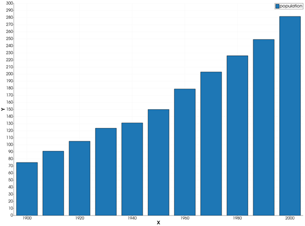
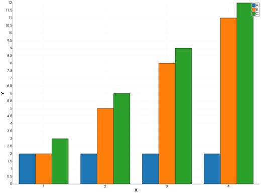
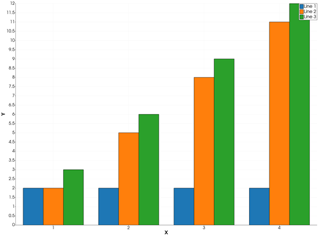
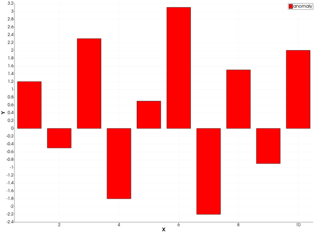
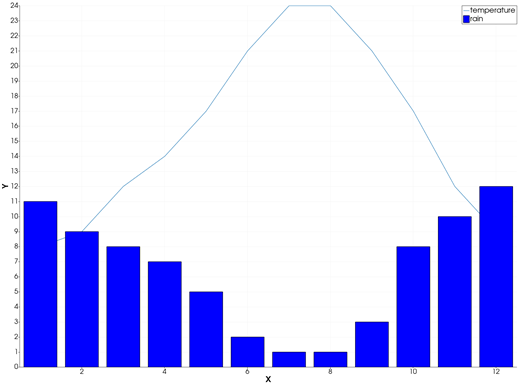
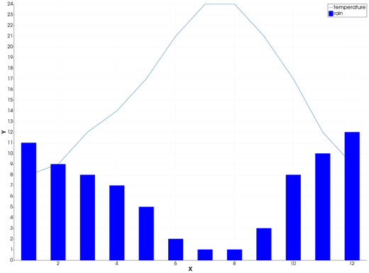

bar — Bar Graph
The bar icon on the X,Y Plot tool's gallery row re-plots every series of the current page as vertical bars: one bar per point, standing on y = 0 at the point's X and reaching up (or down) to its Y. From Julia, a series is drawn as bars directly with bar!.
Syntax
Draw the values as curves, then click bar:
p = plot(x, y)
p = plot(x, Y; multicol=true) # Y a matrix: one bar series per column
plot!(p, x, y2) # more series: bars side by sideOr add a bar series to an open page from Julia:
bar!(p, x, y)
bar!(p, x, y; lc=:red, legend="name")Description
- Each point
(x, y)of a series is one bar centred onx, from0toy. A negativeyhangs down from0. - Each series keeps its colour and name; its bars are filled in its colour.
- With several series on the page, the bars of each X stand side by side, one slot per series: together they take 80 % of the spacing between the first two X values.
bar!(p, x, y)adds one series to the page ofp, already drawn as bars. It takeslc(the colour),lw(the bars' outline width) andlegend, as inplot, andwidth: the bar width in X units. A series given awidthkeeps it; without one, its bars are sized by the chart like the bars of the bar icon.
The bar icon
Clicking bar re-plots every series of the current page as bars, whatever type it was drawn in before. The series keep their data, name and colour. The axes go back to linear and are re-fitted to all the data. The icon acts on the page and needs no series selected. The plot icon turns the bars back into lines.
Running the Examples
Paste each example into the iGMT window's Julia console, or into the Julia REPL after using InteractiveGMT, then click bar on the gallery row. The last example draws its bars with bar! and needs no click.
Examples
Create Bar Graph
The population of a country, one value per decade.
x = 1900:10:2000
y = [75, 91, 105, 123.5, 131, 150, 179, 203, 226, 249, 281.5]
p = plot(x, y; legend="population")
Display Groups of Bars
Three series on one page: at each X their bars stand side by side.
x = 1:4
p = plot(x, [2, 2, 2, 2]; legend="A")
plot!(p, x, [2, 5, 8, 11]; legend="B")
plot!(p, x, [3, 6, 9, 12]; legend="C")
The same with the series as the columns of a matrix:
Y = [2 2 3; 2 5 6; 2 8 9; 2 11 12]
p = plot(1:4, Y; multicol=true)
Bars with Negative Values
A negative value is a bar that goes down from 0.
x = 1:10
y = [1.2, -0.5, 2.3, -1.8, 0.7, 3.1, -2.2, 1.5, -0.9, 2.0]
p = plot(x, y; lc=:red, legend="anomaly")
Draw Bars from Julia
bar! adds a series drawn as bars to a page: here monthly rainfall as bars and the temperature as a line, on the same page.
x = 1:12
p = plot(x, [8, 9, 12, 14, 17, 21, 24, 24, 21, 17, 12, 9]; legend="temperature")
bar!(p, x, [11, 9, 8, 7, 5, 2, 1, 1, 3, 8, 10, 12]; lc=:blue, legend="rain")
Set the Bar Width
width is the bar width in X units: here bars half a month wide.
x = 1:12
p = plot(x, [8, 9, 12, 14, 17, 21, 24, 24, 21, 17, 12, 9]; legend="temperature")
bar!(p, x, [11, 9, 8, 7, 5, 2, 1, 1, 3, 8, 10, 12]; width=0.5, lc=:blue, legend="rain")
Input Arguments
x — bar positions, a vector. Ranges are accepted.
y — bar heights, a vector of the same length as x, or a matrix with length(x) rows and multicol=true (one series per column).
p — plot handle, the QtXYPlot returned by plot.
Keywords
| Keyword | Values | Default |
|---|---|---|
lc, linecolor | the bars' colour, as in plot | next palette colour |
lw, linewidth | the bars' outline width, points | tool default |
legend, l | the series' name | "Line n" |
width | bar! only: the bar width in X units; 0 = sized by the chart | 0 |
With plot, every keyword of plot is accepted; a bar has no markers. bar! takes only the keywords above.
See Also
barh — Horizontal Bar Graph · bar stack — Stacked Bar Graph · waterfall — Waterfall Chart · histogram — Histogram Plot · plot — 2-D Line Plot · X,Y Plot Tool